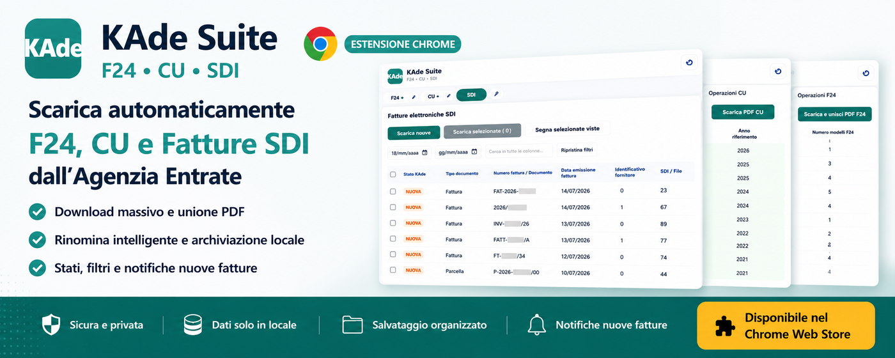
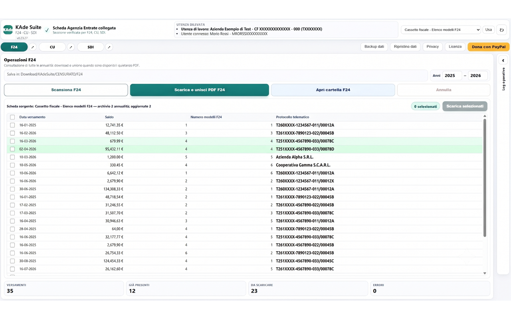
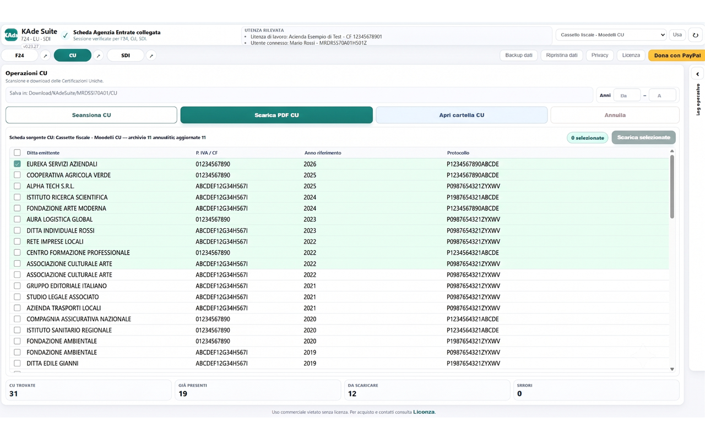
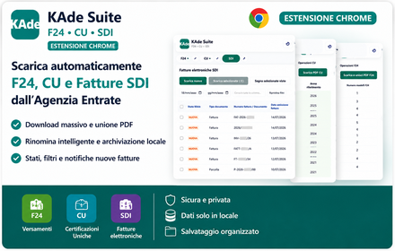

Accedi al portale
Sign in
Autenticati normalmente ai servizi dell’Agenzia delle Entrate e scegli, quando previsto, l’utenza di lavoro.
Sign in normally to the Italian Revenue Agency services and select the working profile when required.
Apri KAde Suite e scegli il modulo su cui lavorare. L’estensione apre o riutilizza automaticamente la pagina corretta, verifica la sessione e collega F24, Certificazioni Uniche e fatture elettroniche a un’unica interfaccia operativa.
Open KAde Suite and choose a module. The extension automatically opens or reuses the correct page, checks the active session and connects F24, Certificazioni Uniche and electronic invoices to one operational interface.

Autenticati normalmente ai servizi dell’Agenzia delle Entrate e scegli, quando previsto, l’utenza di lavoro.
Sign in normally to the Italian Revenue Agency services and select the working profile when required.
La dashboard riconosce la sessione e mantiene distinti utente connesso, intermediario, incaricato o persona di fiducia.
The dashboard recognizes the session and keeps connected user, intermediary, delegate or trusted person separate.
F24, CU o SDI: KAde apre o riutilizza in background la pagina corretta ed evita schede di riferimento duplicate.
F24, CU or SDI: KAde opens or reuses the correct page in the background and avoids duplicate reference tabs.
Scansiona, sincronizza, seleziona, scarica e consulta i documenti senza dover cercare ogni volta la sezione corretta del portale.
Scan, synchronize, select, download and consult documents without searching for the correct portal section each time.
Ogni sezione aggiunge una funzione distinta, senza ripetere lo stesso flusso.
Each section adds a distinct function without repeating the same workflow.
Scansione incrementale per annualità, selezione singola o multipla, download delle quietanze, unione dei PDF, controllo dei duplicati e apertura dei file già archiviati.
Incremental yearly scanning, single or multiple selection, receipt downloads, PDF merging, duplicate detection and opening of archived files.
Recupero progressivo delle Certificazioni Uniche, selezione dei documenti, riconoscimento dell’emittente, rinomina e archiviazione ordinata.
Progressive Certificazioni Uniche retrieval, document selection, issuer recognition, naming and organized archiving.
Sincronizzazione dell’elenco fatture, archivio locale ricercabile, stati NUOVA/LETTA/SCARICATA e download di P7M, XML e PDF FatturaPA.
Invoice list synchronization, searchable local archive, NEW/READ/DOWNLOADED states and P7M, XML and FatturaPA PDF downloads.
Le operazioni di F24 e Certificazioni Uniche restano chiare, separate e subito disponibili nella stessa interfaccia.
F24 and Certificazioni Uniche operations stay clear, separate and immediately available in the same interface.

Scansiona le annualità, seleziona le quietanze da scaricare e unisci i PDF quando serve.
Scan yearly records, select receipts to download and merge PDFs when needed.

Recupera le Certificazioni Uniche, riconosci l’emittente e archivia i documenti con ordine.
Retrieve Certificazioni Uniche, recognize the issuer and organize documents neatly.

Filtri, ricerca, selezione e stato operativo restano disponibili nell’archivio locale anche dopo la sincronizzazione.
Filters, search, selection and operational status remain available in the local archive after synchronization.

Conserva il file originale, estrae localmente l’XML e genera una rappresentazione PDF FatturaPA con hash SHA-256 della sorgente.
Keeps the original file, extracts XML locally and generates a FatturaPA PDF representation with the source SHA-256 hash.
Distingue le fatture nuove, lette e scaricate, aggiornando subito contatori, selezioni e badge.
Distinguishes new, read and downloaded invoices, immediately updating counters, selections and badges.
Quando l’archivio dell’utenza è vuoto, KAde può avviare automaticamente la prima sincronizzazione del modulo SDI.
When the current profile archive is empty, KAde can automatically start the first SDI synchronization.
I documenti vengono salvati in Download/KAdeSuite/<CF o P.IVA>/F24, CU e SDI. Il cambio di posizione fiscale non mescola archivi o stati locali. Backup e ripristino trasferiscono configurazione, archivi e stato operativo tramite un file JSON verificato.
Documents are saved under Downloads/KAdeSuite/<tax code or VAT number>/F24, CU and SDI. Switching tax profile does not mix local archives or states. Backup and restore transfer settings, archives and operational state through a verified JSON file.
Nessun cloud, analytics o invio di documenti allo sviluppatore. KAde Suite non legge né conserva password, cookie o token di autenticazione: utilizza soltanto la sessione già attiva nel browser.
No cloud, analytics or document uploads to the developer. KAde Suite does not read or store passwords, cookies or authentication tokens: it only uses the browser session already active.
No. Devi prima autenticarti ai servizi dell’Agenzia delle Entrate. Poi apri KAde Suite e selezioni il modulo: l’estensione apre o riutilizza automaticamente la relativa pagina di riferimento. In caso di sessione scaduta ti chiede di effettuare nuovamente l’accesso.
No. First sign in to the Italian Revenue Agency services. Then open KAde Suite and select the module: the extension automatically opens or reuses its reference page. If the session has expired, it asks you to sign in again.
Nella cartella Download predefinita di Chrome, sotto KAdeSuite/<CF o P.IVA>/F24, CU e SDI.
In Chrome’s default Downloads folder, under KAdeSuite/<tax code or VAT number>/F24, CU and SDI.
Il codice usa le API standard di Chrome e percorsi relativi alla cartella Download, senza riferimenti fissi a Windows. È quindi progettato per Windows, macOS e Linux. I test principali della versione attuale sono stati eseguiti su Windows; su macOS e Linux è consigliato verificare il flusso con la propria configurazione di Chrome.
The code uses standard Chrome APIs and paths relative to the Downloads folder, with no fixed Windows paths. It is therefore designed for Windows, macOS and Linux. The current version has mainly been tested on Windows; on macOS and Linux, users should verify the workflow with their Chrome configuration.
No. Non sono presenti analytics, pubblicità, telemetria dello sviluppatore o servizi cloud per i documenti.
No. There are no developer analytics, advertising, telemetry or cloud services for documents.
KAde Suite è un progetto indipendente distribuito in modalità donationware. La donazione è facoltativa e non sblocca funzioni nascoste.
KAde Suite is an independent donationware project. Donations are optional and do not unlock hidden features.